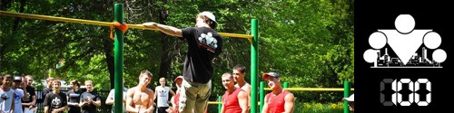

<==== Вернуться к оглавлению

Этот день рано или поздно должен был наступить, верно? И если в начале программы мы с нетерпением его ждали, то сейчас уже даже немного обидно, что все так быстро закончилось. Тем не менее, я доволен тем, что мы успешно провели ещё один запуск программы и по этому поводу подготовил заключительный инфо-пост.
По традиции, каждый запуск программы мы завершаем итоговым видео, где обращаемся лично ко всем участникам, поздравляем их с достигнутыми результатами, отмечаем тот факт, что путь был нелегким, но 100 дневный воркаут - это только начало.
100 дней - это, всё таки, не малый срок. И за это время вам удалось добиться действительно выдающихся результатов. Мне кажется, что нам всем вместе удалось добиться поставленных задач - сделать воркаут частью своей жизни, приучить себя к тренировкам, получить фундаментальные (базовые) знания по тренировкам и питанию, которые позволят нам дальше двигаться самостоятельно. И это действительно здорово!
Программа "100 дневный воркаут" рождалась не только в качестве ответа на многочисленные вопросы, которые задают новички, но и в качестве руководства, которое бы мне самому здорово помогло, если бы я прочитал его перед началом своих тренировок. Поэтому я хочу сказать спасибо Грегу Плитту (Greg Plitt) за его обучающие видео. Именно то, что я узнал из них, заставило меня принципиально по-другому взглянуть на свои тренировки! Настолько же сильно, насколько видео Грега повлияли на мои тренировки, статьи Олега Терна повлияли на моё отношение к питанию. В его ЖЖ можно было найти огромное количество постов по теме различных продуктов, диетологии и питания. К сожалению, сейчас Олег закрыл свой ЖЖ и удалил все записи, но продолжать вести интереснейшую деятельность в рамках проекта http://www.healthlabs.ru/. Вообще Грег и Олег отличаются не только тем, что их имена заканчиваются на "ег", но и тем, что умеют любую информацию приподнести очень просто и доступно. Мы старались делать так же в рамках программы, и я надеюсь, что у нас это получилось.
Ну и раз уж я затронул тему благодарностей, то хочу ещё сказать огромное спасибо Олегу ака ogrudko. Без его участия и поддержки эта программа бы просто не получилась. Так же спасибо kiss9 за критический взгляд и полезные советы начинающим. Вообще спасибо всем, кто регулярно писал о том, как проходят его круги. Эта информация не только полезна нам, как ведущим, но, она так же задавала тонус и всей программе, мотивируя участников идти на площадки и выкладываться по полной!
Отдельно я бы хотел выразить благодарность всем тем, кто помогал нам с переводом программы на английский язык: @ogrudko, @Gunner89, @Elvie, @Krio & Vitali Zhamoidik. Вместе мы смогли сделать первый (и самый важный!) шаг на пути создания международной версии программы. К слову, аудитория нашей группы на Facebook после запуска 100 дневки выросла на 2000 человек, а многие посты шарились и не один раз =)
Мы с Олегом продолжаем знакомиться с вашими достижениями, и они меня действительно радуют! И я очень надеюсь, что вы будете передавать дальше полученные знания и опыт (ну или просто поделитесь с кем-нибудь ссылкой на 100 дневку). Общими усилиями мы действительно можем изменить этот мир!!!
Думаю всем будет интересно посмотреть на статистику по этому запуску, поэтому мы обязательно опубликуем её через 2 недели, как только соберем информацию со всех участников (некоторые отстают и мы дадим им возможность догнать нас ;)). Будет отдельная новость со статистикой на главной странице сайта, так что не пропустите ;)
Вот наверное и всё. С вами были Антон Кучумов и Олег Грудко, до встречи на уличных спортивных площадках вашего города ;)
<==== Вернуться к оглавлению